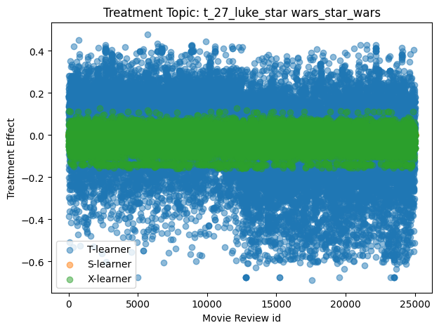

5 NLP
There are many possible applications of causal inference in machine learning. In this chapter, we focus on applying causal methods to datasets that include text. Causal inference with text data can be challenging because text data is high-dimensional 1, unstructured, and often has complex dependencies among words.
5.1 Causal Concepts in Text Data
5.1.1 Roles of Text in Causal Inference
There are four roles that text can play in causal inference problems: treatment/intervention, outcome, confounder, or mediator. The role that text plays depends on the question being asked and the relationships between the variables of interest (Weld et al. 2022; Keith, Jensen, and O’Connor 2020). See examples of each role text can play in the list below:
Text as treatment: Text can be a treatment when a specific aspect of the text, such as the presence or absence of certain words, phrases, or linguistic features, is used as a treatment (Egami et al. 2022). For example, what effect does using positive or negative language in an advertisement have on consumers’ purchase decisions?
Text as outcome: Text can be an outcome when the goal is to understand how a certain treatment or intervention influences the characteristics of text data. For example, measuring the effect of a social media platform’s algorithm change on user-generated content.
Text as confounder: Text can be a confounder when it is related to both the treatment and the outcome. For example, when analyzing the impact of online reviews on product sales, the sentiment of the review text could be a confounder if it affects both the likelihood of the review being featured prominently and the likelihood of potential customers making a purchase.
Text as mediator: Text can be a mediator when it serves as an intermediate variable in the causal pathway between the treatment and the outcome. For example, if you are studying the effect of political campaign messages on voter behavior, the way the message is framed (e.g., positive or negative tone) might be a mediator, as it could explain how the message influences voter behavior.
5.1.2 Definitions
In this section, we recap some of the terminology from Section 2.2.1 to discuss what they mean when applied to text data.
Explanatory variables: These variables, also known as independent or predictor variables, are the factors that may influence or explain the outcome variable. In text data, explanatory variables can include textual features (such as specific words, phrases, or topics), linguistic characteristics (like sentiment, readability, or syntactic complexity), or contextual variables (e.g., the author’s background, the publication date, or the platform on which the text appears). These variables can be used to model and estimate the effect of the treatment or intervention on the outcome of interest.
Outcome variables: These variables, also known as dependent or response variables, are the outcomes of interest that may be influenced by the explanatory variables or treatment. In text data, outcome variables can be quantitative measures derived from the text (e.g., sentiment scores, topic prevalence, or engagement metrics like shares or likes) or qualitative aspects of the text (e.g., the presence of specific themes or the adoption of particular language styles). The outcome variables are the focus of the causal analysis, as researchers aim to estimate the causal effect of the explanatory variables or treatment on these outcomes.
Unobserved variables: These are variables that are not directly measured or included in the dataset but may still influence the relationships between the explanatory and outcome variables. In text data, unobserved variables can include latent factors (e.g., the author’s intent, the target audience’s preferences, or the influence of cultural context) or omitted variables (e.g., important covariates that were not collected or measured). Unobserved variables can introduce confounding or bias in the estimation of causal effects, as they may be associated with both the explanatory variables and the outcome variables, leading to spurious correlations or endogeneity issues. Note that unobserved variables are common when dealing with text data.
Unit: When the treatment or outcome is text data, the unit/sample/individual refers to the specific instance of text data that is subjected to the treatment and on which the effect or outcome is observed. In this context, the atomic research object represents the smallest unit of text data that can be meaningfully analyzed in the study. This can vary depending on the research question and the nature of the text data being analyzed. For example, the unit can be an entire document, such as a news article, a review, or an essay. It could also be a single sentence, an individual user who generates text data, such as social media posts or comments, or a thread of messages, such as an online forum discussion or a series of text messages between individuals.
5.2 Encoding Text
In this section, we focus on the estimation portion of the causal inference process, in particular, how to estimate the causal effect when there is text data.
(Egami et al. 2022) describes the importance of transforming high-dimensional text into a lower-dimensional variable because causal inference is easier when the data is not high-dimensional. They describe an encoder function \(g\) that maps text, \(\mathbf{T}\), into a variable relevant to the causal question, \(\mathbf{Z} = g(\mathbf{T})\). To estimate causal effects sizes with text we need to find the encoding function, \(g\).
5.2.1 Example: Bag-of-words text encoding
It is easy to see why text data is considered high-dimensional by considering what is likely the simplest nontrival example: a “bag-of-words” (BoW) representation of text. In a BoW representation each unique word is a feature, the feature weight is often the number of times a word it appears in the document, and the order in which words appear in the text is ignored. So, if the document contained 10,000 unique words (this is often called the “vocabulary”), then we could describe any sentence in the document as a highly sparse vector of length 10,000, one entry for each word in the vocabulary.
The following code snippet shows an example of the BoW encoding with two sentences. Each sentence is represented as a vector with length equal to the vocabulary size, with a 1 for each word it contains. The BoW representation generated by the snippet is shown in Figure 5.1.
import matplotlib.pyplot as plt
import numpy as np
# Encoder function to map sentence to bag-of-words vector
def sentence_to_bow(sentence, vocab):
bow_vec = np.zeros(len(vocab))
for word in sentence.split():
bow_vec[list(vocab).index(word)] = 1
return bow_vec
# Create sample text data
sentence1 = "The cat sat on the mat"
sentence2 = "The dog played in the yard"
# Tokenize the sentence into words
words1 = sentence1.split()
words2 = sentence2.split()
# Create a vocabulary of unique words
vocab = set(words1 + words2)
# Map sentences to BoW vectors
vec1 = sentence_to_bow(sentence1, vocab)
vec2 = sentence_to_bow(sentence2, vocab)
# Plot the sentence vectors
fig, ax = plt.subplots()
ax.imshow([vec1, vec2], cmap='Greys')
ax.set_xticks(np.arange(len(vocab)))
ax.set_xticklabels(list(vocab), rotation=90)
ax.set_title('Text Vector Representations')
plt.tight_layout()
plt.show()5.2.2 Binary encodings
If we consider binary text treatments, then \(g\) simply returns 1 if the treatment is present in the text and 0 if the feature is absent. For binary outcomes, then \(g\) behaves identically. Note that this type of encoding is similar to the bag-of-words encoding, except we are encoding the presence or absence of a given treatment rather than the presence or absence of a given word.
5.2.3 Multidimensional encodings
In both cases, treatment or outcome is a one-dimensional variable. If, however, you’re considering multidimensional treatments, where (\(\mathbf{T} \rightarrow \mathbf{T}_i\)), or multidimensional outcomes, (\(\mathbf{Y} \rightarrow \mathbf{Y}_i\)), then the situation is more complicated. To deal with these more complicated situations, (Egami et al. 2022) extends the potential outcomes framework to cover high-dimensional source text by producing low-dimensional representations of text from the encoder \(g\). In such cases, \(g\) will be a machine learning model. When using such models, be aware that incorrect predictions can bias downstream calculations.
5.2.3.1 Multidimensional outcomes
When the outcome variable is text (like in a text classifier), then \(g\) maps the outcome variable (e.g. a class label) to a low-dimensional value: \(g: \mathcal{Y} \rightarrow \mathcal{Z}_Y\) and \(g(\mathbf{Y}_i)=\mathbf{z}_i\). Note that this also applies if the outcome was a set of several class labels, like in a multilabel classifier.
(Egami et al. 2022) gives a few examples of \(\mathcal{Z}\): when text is the outcome and there are \(K\) possible, mutually exclusive values (e.g. multiclass classification), then \(\mathcal{Z}=\{0,1,\ldots,K-1\}\). If the outcome has \(K\) dimensions, such as with a multilabel classification problem, \(\mathcal{Z}\) is a \(K - 1\) dimensional simplex.
5.2.3.2 Multidimensional treatments
When the treatment variable is text, then we have \(g: \mathcal{T} \rightarrow \mathcal{Z}_T\) and \(g(\mathbf{T}_i)=\mathbf{z}_i\).
When text is a treatment, (Egami et al. 2022) recommends letting \(\mathcal{Z}\) be a set of \(K\) one-hot encoded vectors, each vector denoting the presence of the \(kth\) treatment and absence of all others. They recommend using one-hot vectors instead of continuous vectors, because many methods that result in continuous feature vectors include information about the text, but not the outcomes. Note that more recent methods that learn embeddings for text by training a large language model is able to encode some information about the outcomes.
5.2.4 Encoding confounders
As in Chapter 3, confounders can bias causal estimates. For text data, latent confounders are common and care must be taken to ensure that the text used as a proxy for confounders is actually related to the confounder in question. For example, if a study were examining the causal effect of a certain drug on a particular health outcome, and the researchers suspect that a certain lifestyle factor (such as diet or exercise) may be a confounder, they may use text data (such as tweets or forum posts) to infer information about the participants’ diets or exercise habits and just the calculation of causal estimates to account for the confounders.
5.2.4.1 Text representations
This section has focused on a function \(g\) that converts raw text into a lower-dimensional text representation. It is important that \(g\) also encode assumptions and knowledge about which text is confounding. There are many commonly used text feature vector generation methods that can be used for this purpose. (Keith, Jensen, and O’Connor 2020) and (Weld et al. 2022) mention several, including lexicon matches, word and sentence embeddings, n-gram count features, and tf-idf weighted features. The causalnlp library introduced in (Maiya 2021) includes a variety of text encoding methods, including those mentioned above. Text representations with confounders can be generally broken into two classes, based on how the confounders are defined, which the options being pre-specified or learned confounders. Note that one of the reasons the dimensionality matters when text is a confounder is because (D’Amour et al. 2017) showed that \(P(T=t \vert X=x)\) goes to zero as the dimensionality of \(x\) increases. This is a consequence of the curse of dimensionality.
5.2.4.1.1 Pre-specified confounders
Pre-specifying confounders amounts to treating for specific words or patterns as confounders, using lexicons or spans of annotated text. Using lexicons reduces identifying confounders to matching or a lookup. Using text annotations requires the additional step of training a text classifier. Both of these options begin with text that is predetermined to be confounding. For example, a lexicon of words associated with diet or exercise can be used to identify mentions of these confounders in text data. Similarly, by training a text classifier from annotations mentioning a confounder, such confounders can be identified in the future. For example, (Choudhury et al. 2016) and (Choudhury and Kıcıman 2017) trained a machine learning model to predict likelihood of social support based on input text using a dataset of social media posts that had been manually labeled with information about the users’ social support. In each of these cases (Keith, Jensen, and O’Connor 2020) reminds us that using approximate confounders, or their proxies, can lead to errors when computing causal estimates.
5.2.4.1.2 Learned Confounders
Methods of the second type are generally unsupervised/self-supervised. They discover confounding content of the text by encoding the text in representations common in NLP and condition on the discovered aspects when making causal estimates. Common methods include encoding text into bag-of-words features, embeddings (word/sentence/document), topics, sentiment analysis, and aspect extraction. The purpose here is to encode the semantic content in the text so that it can be used in place of the confounder when computing causal estimates. (Keith, Jensen, and O’Connor 2020) describes this category as identifying the “language” and gives the example of an article’s topics being a likely confounder of the author’s gender and the number of citations the article will get. The primary challenge with these methods is that different methods and choice of hyperparameters provide different results. A different set of choices leads to a different set of variables used for conditioning and hence to different causal estimates.
As an example, consider a fictional study examining the causal effect of a fictional new drug called “Wunderdrug” on risk of death from heart disease, where diet, weight, or exercise may be a confounder. We made up a list of 68 sentences describing fictional outcomes for fictional treatment with Wunderdrug, computed sentence embeddings with the sentence-transformers library, and clustered them into eight clusters with the k-means clustering implementation in the scikit-learn library. The code can also be seen in the snippet below. The contents of the clusters are shown in Figure 5.2. Cluster 0 mostly contains sentences about cholesterol and cardiac health. Cluster 1 is about weight loss and exercise. Cluster 2 describes some negative outcomes of treatment with Wunderdrug. Cluster 3 mostly mentions heart disease, high blood pressure, and obesity. Cluster 4 is about diet and exercise. Cluster 5 is about diet, Cluster 6 is about atherosclerosis, and Cluster 7 is about exercise and a plant-based diet. This example illustrates how learned representations of text data, specifically sentence embeddings, are able to encode a variety of relevant semantic content, making them suitable representations for capturing features of the text that could be a source of confounding associations.
# run `pip install sentence-transformers umap-learn scikit-learn datasets`
import platform
import torch
import umap
from datasets import load_dataset
from sentence_transformers import SentenceTransformer
def get_device():
device = None
if platform.system() == 'Darwin' and \
torch.backends.mps.is_available():
return 'mps'
if torch.cuda.is_available():
return 'cuda'
return 'cpu'
# load dataset
ds = load_dataset("klogram/wunderdrug", split="train")
# Embed sentences
model = SentenceTransformer(
'all-MiniLM-L6-v2',
device=get_device(),
)
embeddings = model.encode(
ds["text"],
show_progress_bar=True,
convert_to_numpy=True,
)
import pandas as pd
from sklearn.cluster import KMeans
# Cluster with KMeans
num_clusters = 8
kmeans = KMeans(n_clusters=num_clusters)
clusters = kmeans.fit_predict(embeddings)
# Create dataframe
df = pd.DataFrame({
'sentence': ds["text"],
'cluster': clusters,
})
# Inspect clusters
for i in range(num_clusters):
cluster_sentences = df[df['cluster'] == i]['sentence']
print(f'Cluster {i}')
print(cluster_sentences.values)5.2.5 Training \(g\)
When training \(g\), (Egami et al. 2022) pointed out that one must take care to prevent a violation of the Stable Unit Treatment Value Assumption (SUTVA), which was covered in Section 2.5.1.6, the data must be split into train and test subsets. A validation split may also be useful. Recall that SUTVA assumes that the potential outcome of a given unit is independent of the treatments applied to any other unit, or \(Y_i(T) = Y_i(T_i)\). If \(g\) is trained on a dataset and then used to encode that same dataset, then any given outcome will have a dependency on the treatments made to all the other units. That is a clear SUTVA violation. This problem is eliminated by learning \(g\) on the training set and then using the test set to estimate causal effects. If your problem and data are such that \(g\) does not change when the data changes, then you do not need to be concerned about breaking SUTVA.
5.3 Making Estimates with Metalearners
In this section, we focus on computing causal estimates using the meta-learner covariate adjustment methods discussed in Section 3.5. Meta-learners were introduced in (Künzel et al. 2019) and are a class of machine learning algorithm designed to estimate causal effects in the presence of treatment and control groups, while adjusting for covariates/confounders. They are called “meta-learners” because they build upon multiple base learners (machine learning models) to estimate treatment effects, taking advantage of the machine learning algorithms ability to predict counterfactual outcomes while adjusting for confounding variables.
For cases where there are no covariates, we can compute the average treatment effect (ATE), but when there are confounders, we are instead computing the conditional average treatment effect (CATE) Section 3.5.0.1. The CATE is a measure of the average causal effect of a treatment on the outcome variable for a specific subgroup of the population defined by a set of covariates. In other words, it estimates the treatment effect while taking into account the heterogeneity in the treatment effect across different subgroups in the population. Note that meta-learners are just one way of estimating causal effects in the presence of covariates. Chapter 3 discusses several other methods.
5.3.1 Types of meta-learners
There are several popular meta-learning algorithms for causal inference:
S-Learner: This method trains a single predictive model on the entire dataset, including both treatment and control groups. The treatment variable is treated like any other feature since the entire dataset is being used. S-Learner assumes that the treatment effect is homogeneous across the population. It was introduced in (Künzel et al. 2019) and is discussed in Section 3.5.0.1.
T-learner: This method trains two separate base learners, for the treatment group and one for the control group. The causal effect for each observation is then estimated as the difference in predicted outcomes from the treatment model and the control model. T-Learner allows for heterogeneous treatment effects across the population. The treatment variable is not used as a feature when training the models because it is instead used to partition the dataset into treated and untreated subsets. It was introduced in (Athey and Imbens 2015) and (Künzel et al. 2019).
X-Learner: This method extends the T-Learner by training separate models for the treatment and control groups, but it also cross-fits the predictions to reduce potential bias due to overfitting. The reduction is because, while separate models are being trained for treated and untreated groups, each uses data from the other treatment group. In addition, X-Learner can leverage the information from the estimated propensity scores to re-weight the samples and improve the estimation of the conditional average treatment effect (CATE). Also, the X-Learner was designed to be efficient to use in cases where the size of one treatment group (usually the control group) is much larger than the other group. It was introduced in (Künzel et al. 2019) and is discussed in Section 3.5.3.
R-Learner: The R-Learner focuses on learning the relationship between the treatment variable and the residuals (R is for residual) of the outcome variable. First, separate models are fitted to predict the treatment and outcome variables based on the covariates. Then, the residuals from these models are used to train another model that predicts the outcome residual given the treatment residual. The causal effect for each observation is estimated using this model, which is trained to specifically capture the relationship between the treatment and outcome after accounting for the covariates. R-Learner attempts to directly model the treatment effect, allowing for heterogeneous treatment effects across the population. It was introduced in (Nie and Wager 2017).
5.4 Case Study
This case study demonstrates one way of applying causal inference methods to a real-world dataset that includes text. We make the ignorability assumption, which says that, after conditioning on a set of observed covariates, the treatment assignment is independent of the potential outcomes. In other words, it assumes that there are no unmeasured confounders that simultaneously influence the treatment assignment and the potential outcomes. See Section 2.5.1.1 for more on this assumption.
This case study follows the Metalearners Examples notebook that is in the EconML Github repository and can be viewed on Google Colab.
5.4.1 Dataset
We’ll analyze the IMDB large movie reviews dataset, which was introduced in (Maas et al. 2011). This case study used the version available from Huggingface Datasets: https://huggingface.co/datasets/imdb.
In this case study, we ask the following question: “What influence do specific topics have on the sentiment of a movie review?”. The treatment variable will be one of several possible topics in the movie review text. The outcome variable will be the binary sentiment label: 1 (positive) or 0 (negative). We estimate covariates by computing text embeddings with a pre-trained Transformer model.
5.4.2 Tools and Library
We use the EconML library (Keith Battocchi 2019) for computing CATE with meta-learners. The text encoding, discussed as the function \(g\) in Section 5.2, is provided by two libraries: BERTopic (Grootendorst 2022) for topic modeling and sentence-transformers (Reimers and Gurevych 2019) for text embeddings. We use the Huggingface datasets and pandas libraries for loading and working with the dataset, matplotlib for data visualization, and scikit-learn to create the train/test split, as described in Section 5.2.5. We also use the UMAP library for dimensionality reduction. You can install these by running the following command:
# umap and sentence-transformers are installed with bertopic
pip install bertopic==0.14.1\
dowhy==0.9.1\
numba==0.56.4\
numpy==1.23.5\
datasets5.4.3 Generating Topics with BERTopic
Since the treatment of interest is the presence of a given topic in the movie description, we will start with topic modeling. The first step is to load the data:
from datasets import load_dataset
# downloads train and test sets, and also an unlabeled set
ds = load_dataset("imdb")We also need to remove line break characters from the review text:
import re
import string
def clean(text):
# Remove line breaks
text = re.sub(r"<br />", "", text)
return text
# Huggingface datasets lets up map over all three
clean_ds = ds.map(lambda example: {"text": clean(example["text"])})5.4.3.1 Text Embeddings
Since BERTopic uses pre-trained transformer models in the topic generation process, we next compute embeddings for the movie overviews.
from sentence_transformers import SentenceTransformer
import torch
def get_torch_device():
# This will the appropriate torch backend
if torch.cuda.is_available():
return "cuda"
elif torch.backends.mps.is_available():
return "mps"
else:
return "cpu"
device = get_torch_device()
sentence_model = SentenceTransformer("all-MiniLM-L6-v2",
device=device)
embeddings = sentence_model.encode(docs,
show_progress_bar=True,
device=device)5.4.3.2 Topics
Next, generate topics. We have chosen to use BERTopic here because you do not need to carefully tune parameters to get useful results.
from bertopic import BERTopic
from sklearn.feature_extraction.text import CountVectorizer
from umap import UMAP
# use word unigrams, bigrams, trigrams
vectorizer_model = CountVectorizer(
stop_words="english",
ngram_range=(1, 3)
)
umap_model = UMAP(
n_neighbors=15,
n_components=5,
min_dist=0.0,
metric='cosine',
random_state=42
)
NUM_TOPICS = 50
topic_model = BERTopic(
embedding_model=sentence_model,
umap_model=umap_model,
vectorizer_model=vectorizer_model,
calculate_probabilities=True,
nr_topics=NUM_TOPICS,
)
train_docs = list(clean_ds["train"]["text"])
test_docs = list(clean_ds["test"]["text"])
topics, probs = topic_model.fit_transform(train_docs, train_embeddings)
# fine-tune topic representation
vectorizer_model_1 = CountVectorizer(stop_words="english", ngram_range=(1, 3), min_df=10)
topic_model.update_topics(train_docs, vectorizer_model=vectorizer_model_1)The distribution of topics is shown in Figure 5.3. Each dot represents a movie and each color represents a topic. There are two separate sections because there are positive and negative sentiment labels. We use embeddings reduced to 2D for plotting.
umap_2d = UMAP(
n_neighbors=10,
n_components=2,
min_dist=0.0,
metric='cosine',
)
train_embeddings_2d = umap_2d.fit_transform(
train_embeddings,
clean_ds["train"]["label"],
)topic_model.visualize_documents(
train_docs,
reduced_embeddings=train_embeddings_2d,
hide_document_hover=False,
hide_annotations=True,
)You may have noticed that only one topic is assigned to each movie review, which is counter to what we want, since a movie review can have more than one topic. To address this, we can assign more than one topic to each review by using soft assignments.
topic_distr, topic_token_distr = topic_model.approximate_distribution(
train_docs,
calculate_tokens=True,
window=4,
)
test_topic_distr, test_topic_token_distr = topic_model.approximate_distribution(
test_docs,
calculate_tokens=True,
window=4,
)In the previous code snippet, you may have noticed calculate_tokens=True. This lets us see how much each token in the text contributes to that texts’s topic assignments. Figure 5.4 shows a portion of the token topic distribution for the text of one movie review.
topic_model.visualize_approximate_distribution(
train_docs[134],
topic_token_distr[134]
)5.4.3.2.1 Adding topics to the dataframe
Lastly, we are going to add the topics to the dataframe. We’re also going to use the topic labels used by BERTopic as the dataframe column names. We will add one column to the dataframe for each topic.
import pandas as pd
topic_labels = topic_model.generate_topic_labels(
nr_words=4,
topic_prefix=True,
word_length=10,
separator="_",
)
id2topic = {i-1: f"t_{label}"
for i, label in enumerate(topic_labels)}
del id2topic[-1] # drop outlier topic
ntopics = topic_distr.shape[1]
topic_names = [id2topic[i] for i in range(ntopics)]
train_topics_df = pd.DataFrame(
data=topic_distr,
columns=topic_names,
)
train_df = clean_ds["train"].to_pandas()
train_df_full = pd.concat(
[train_df, train_topics_df],
axis=1,
)
test_topics_df = pd.DataFrame(
data=test_topic_distr,
columns=topic_names,
)
test_df = clean_ds["test"].to_pandas()
test_df_full = pd.concat(
[test_df, test_topics_df],
axis=1,
)5.4.4 Covariates
We’ll use the sentence embeddings computed above. The embedding dimension is 384, which is rather high, so we will use UMAP to reduce the dimension to 20. As with the topics, we will add the embeddings to the dataframe. There will be one column for each embedding dimension.
print(f"Embeddings: {train_embeddings.shape}")
n_covariates = 20
col_names = [f"e_{i:04d}" for i in range(n_covariates)]
umap_cov = UMAP(
n_neighbors=10,
n_components=n_covariates,
min_dist=0.0,
metric='cosine',
)
train_covariates = umap_cov.fit_transform(train_embeddings)
test_covariates = umap_cov.transform(test_embeddings)
print(train_covariates.shape)
print(test_covariates.shape)
X_df = pd.DataFrame(
data=train_covariates,
columns=col_names,
)
train_df_all = pd.concat([train_df_full, X_df], axis=1)
X_df = pd.DataFrame(
data=test_covariates,
columns=col_names,
)
test_df_all = pd.concat([test_df_full, X_df], axis=1)Our outcome variable is the sentiment label. Positive sentiment is label = 1, negative sentiment is label = 0, so we need not binarize the labels. We are adding a simple method to grab the label column and similar methods for selecting a specific topic column from the dataframe, and then convert it to a binary-valued column according to a probability threshold. There is also a method that grabs the covariate columns.
def get_outcome_values(df):
Y = df["label"].to_numpy()
return Y
def get_treatment_values(df, topic_id, threshold=0.5):
topic = id2topic[topic_id]
t = threshold
T = df[topic].apply(lambda x: x >= t).astype(int).to_numpy()
return T
def get_covariate_values(df):
X = df[col_names].to_numpy()
return XNow we can grab the train/test values for treatment, outcome, and covariates and move on to the causal analysis. Note: Due to some inherent randomness, the ids of a topic may shift when this code is run at a later date. The overall distribution will be somewhat stable though. In this first example, we will use topic_id=27, which corresponds to several terms related to the “Star Wars” films.
# treatment
topic_id = 27 # star wars
T_train = get_treatment_values(
train_df_all,
topic_id,
threshold=0.1,
)
T_test = get_treatment_values(
test_df_all,
topic_id,
threshold=0.1,
)
print(f"T_train: {T_train.shape}")
print(f"T_test: {T_test.shape}")
Y_train = get_outcome_values(train_df_all)
Y_test = get_outcome_values(test_df_all)
print(f"Y_train: {Y_train.shape}")
print(f"Y_test: {Y_test.shape}")
X_train = get_covariate_values(train_df_all)
print(f"X_train: {X_train.shape}")
X_test = get_covariate_values(test_df_all)
print(f"X_test: {X_test.shape}")5.4.5 Train metalearner causal estimators
In this section we train the meta-learners that we’ll use to compute CATE. First, we’ll want to import the classes and methods we’ll need.
import numpy as np
from numpy.random import (
binomial,
multivariate_normal,
normal,
uniform,
)
from sklearn.ensemble import (
RandomForestClassifier,
GradientBoostingRegressor,
)
import matplotlib.pyplot as plt
min_samples_leaf = len(T_train) // 1005.4.5.1 T-learner
models = GradientBoostingRegressor(
n_estimators=100,
max_depth=6,
min_samples_leaf=min_samples_leaf
)
T_learner = TLearner(models=models)
T_learner.fit(Y_train, T_train, X=X_train)
# Estimate treatment effects on test data
T_te = T_learner.effect(X_test)5.4.5.2 S-learner
overall_model = GradientBoostingRegressor(
n_estimators=100,
max_depth=6,
min_samples_leaf=min_samples_leaf
)
S_learner = SLearner(overall_model=overall_model)
S_learner.fit(Y_train, T_train, X=X_train)
# Estimate treatment effects on test data
S_te = S_learner.effect(X_test)5.4.5.3 X-learner
models = GradientBoostingRegressor(
n_estimators=100,
max_depth=6,
min_samples_leaf=min_samples_leaf
)
propensity_model = RandomForestClassifier(
n_estimators=100,
max_depth=6,
min_samples_leaf=min_samples_leaf
)
X_learner = XLearner(
models=models,
propensity_model=propensity_model
)
X_learner.fit(Y_train, T_train, X=X_train)
# Estimate treatment effects on test data
X_te = X_learner.effect(X_test)5.4.6 Comparing treatment effects
Here we compare the treatment effect estimates for topic 27 (Star Wars) computed in the previous section. We plot each effect estimate against the test set index in Figure 5.5.

In Figure 5.6 we view this same information in histogram form, where we can see the number of movie reviews with the Star Wars topic that have CATE values in a given range.
These results show that, according to the S-Learner, the Star Wars topic has a negligible positive effect on the sentiment of a movie review. However, the T-Learner and X-Learner both show a that this topic has a positive effect on the outcome for some reviews and a negative effect on the outcome for other reviews. Let’s look at the CATE histograms of a few more topics.
def run_analysis(topic_id, topic_threshold=0.1):
# topic_id is treatment
T_train = get_treatment_values(
train_df_all,
topic_id,
threshold=topic_threshold,
)
T_test = get_treatment_values(
test_df_all,
topic_id,
threshold=topic_threshold,
)
treated_indices = np.where(T_test == 1)[0]
untreated_indices = np.where(T_test == 0)[0]
Y_train = get_outcome_values(train_df_all)
Y_test = get_outcome_values(test_df_all)
X_train = get_covariate_values(train_df_all)
X_test = get_covariate_values(test_df_all)
print("Building T-Learner...")
models = GradientBoostingRegressor(
n_estimators=100,
max_depth=6,
min_samples_leaf=min_samples_leaf,
)
T_learner = TLearner(models=models)
T_learner.fit(Y_train, T_train, X=X_train)
T_te = T_learner.effect(X_test)
print("Building S-Learner...")
overall_model = GradientBoostingRegressor(
n_estimators=100,
max_depth=6,
min_samples_leaf=min_samples_leaf,
)
S_learner = SLearner(overall_model=overall_model)
S_learner.fit(Y_train, T_train, X=X_train)
S_te = S_learner.effect(X_test)
print("Building X-Learner...")
models = GradientBoostingRegressor(
n_estimators=100,
max_depth=6,
min_samples_leaf=min_samples_leaf,
)
propensity_model = RandomForestClassifier(
n_estimators=100,
max_depth=6,
min_samples_leaf=min_samples_leaf
)
X_learner = XLearner(
models=models,
propensity_model=propensity_model,
)
X_learner.fit(Y_train, T_train, X=X_train)
X_te = X_learner.effect(X_test)
plt.figure(figsize=(7, 5))
x_axis = np.arange(len(X_test))
plt.hist(T_te, label="T-learner", bins=10, alpha=0.5)
plt.hist(S_te, label="S-learner", bins=10, alpha=0.5)
plt.hist(X_te, label="X-learner", bins=10, alpha=0.5)
plt.xlabel('Treatment Effect')
plt.ylabel('Frequency')
plt.title(f"Treatment Topic: {id2topic[topic_id]}")
plt.legend()
plt.show()We can use the `run_analysis function to generate several histograms:
Figure 5.7, Figure 5.8, Figure 5.9, and Figure 5.10 show the result CATE histogram for the Disney, Batman, holiday movie, and Dan Brown topics, respectively. Each histogram was generated by calling run_analysis with the appropriate topic id.
5.4.6.1 Analysis
So, what does the distribution of CATE scores tell us?
Generally speaking, when the outcome variable is binary-valued (as it is for our movie review data), a negative CATE value means that the treatment has a negative/detrimental effect on the outcome variable. For the IMDB data, that means that when the topic is present in the movie review, said review is more likely to be negative than similar reviews without the topic. Similarly, a positive CATE value suggests that the topic tends to make the review more positive.
5.4.6.1.1 S-Learner CATE scores
A few of the histogram plots have a large peak for the S-Learner that is near zero. The S-Learner scores are then suggesting that each topic has a negligible effect of the sentiment of movie reviews.
However, the S-Learner assumes that the treatment effect is homogeneous across the population. If that assumption is not correct (and we have no reason to think it should be), then treatment effect is not homogeneous across the population, then the CATE scores calculated using an S-Learner may not accurately reflect the true treatment effect.
5.4.6.1.2 T-Learner and X-Learner CATE scores
The histograms for the T-Learner and X-Learner suggest that the effect a given topic has on the movie review sentiment is sometimes positive and sometimes negative. Figure 5.5 shows that we can actually see which specific movie reviews have positive and negative scores.
We can also note that the some topics appear to have a large effect on sentiment. An example of this is topic 23, the Dan Brown topic, as shown in Figure 5.10.
Athey, Susan, and Guido Imbens. 2015. “Machine Learning for Estimating Heterogeneous Causal Effects.” In.
Choudhury, Munmun De, and Emre Kıcıman. 2017. “The Language of Social Support in Social Media and Its Effect on Suicidal Ideation Risk.” Proceedings of the ... International AAAI Conference on Weblogs and Social Media. International AAAI Conference on Weblogs and Social Media 2017: 32–41.
Choudhury, Munmun De, Emre Kıcıman, Mark Dredze, Glen A. Coppersmith, and Mrinal Kumar. 2016. “Discovering Shifts to Suicidal Ideation from Mental Health Content in Social Media.” Proceedings of the 2016 CHI Conference on Human Factors in Computing Systems.
D’Amour, Alexander, Peng Ding, Avi Feller, Lihua Lei, and Jasjeet S. Sekhon. 2017. “Overlap in Observational Studies with High-Dimensional Covariates.” Journal of Econometrics.
Egami, Naoki, Christian Fong, Justin Grimmer, Margaret E. Roberts, and Brandon M Stewart. 2022. “How to Make Causal Inferences Using Texts.” Science Advances 8 42: eabg2652.
Grootendorst, Maarten. 2022. “BERTopic: Neural Topic Modeling with a Class-Based TF-IDF Procedure.” arXiv Preprint arXiv:2203.05794.
Keith Battocchi, Maggie Hei, Eleanor Dillon. 2019. “EconML: A Python Package for ML-Based Heterogeneous Treatment Effects Estimation.” https://github.com/py-why/EconML.
Keith, Katherine A., David D. Jensen, and Brendan T. O’Connor. 2020. “Text and Causal Inference: A Review of Using Text to Remove Confounding from Causal Estimates.” ArXiv abs/2005.00649.
Kudo, Taku, and John Richardson. 2018. “SentencePiece: A Simple and Language Independent Subword Tokenizer and Detokenizer for Neural Text Processing.” ArXiv abs/1808.06226.
Künzel, Sören R, Jasjeet S Sekhon, Peter J Bickel, and Bin Yu. 2019. “Metalearners for Estimating Heterogeneous Treatment Effects Using Machine Learning.” Proceedings of the National Academy of Sciences 116 (10): 4156–65.
Maas, Andrew L., Raymond E. Daly, Peter T. Pham, Dan Huang, A. Ng, and Christopher Potts. 2011. “Learning Word Vectors for Sentiment Analysis.” In Annual Meeting of the Association for Computational Linguistics.
Maiya, Arun S. 2021. “CausalNLP: A Practical Toolkit for Causal Inference with Text.” ArXiv abs/2106.08043.
Nie, Xinkun, and Stefan Wager. 2017. “Quasi-Oracle Estimation of Heterogeneous Treatment Effects.” arXiv: Machine Learning.
Reimers, Nils, and Iryna Gurevych. 2019. “Sentence-BERT: Sentence Embeddings Using Siamese BERT-Networks.” In Proceedings of the 2019 Conference on Empirical Methods in Natural Language Processing. Association for Computational Linguistics. http://arxiv.org/abs/1908.10084.
Sennrich, Rico, Barry Haddow, and Alexandra Birch. 2015. “Neural Machine Translation of Rare Words with Subword Units.” ArXiv abs/1508.07909.
Weld, Galen Cassebeer, Peter West, Maria Glenski, David T. Arbour, Ryan A. Rossi, and Tim Althoff. 2022. “Adjusting for Confounders with Text: Challenges and an Empirical Evaluation Framework for Causal Inference.” ArXiv abs/2009.09961.
Text data is inherently high-dimensional because when we tokenize a dataset the vocabulary is often large. This is one of the reasons why sub-word tokenization methods like Byte-Pair Encoding (BPE) (Sennrich, Haddow, and Birch 2015) and SentencePiece (Kudo and Richardson 2018) were introduced and continue to be used in language models.↩︎